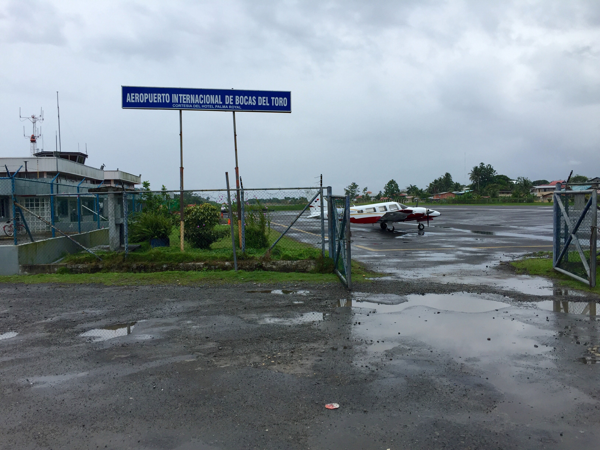

Cómo llegar a Bocas del Toro
Getting to Bocas del Toro
Vuelos, buses y taxis acuáticos con tarifas reales de 2026. Y el error que casi todo el mundo comete al reservar el vuelo.
Flights, buses and water taxis with real 2026 fares. And the mistake almost everyone makes booking the flight.

Empecemos por el error que le cuesta un vuelo a más gente que cualquier otro: los vuelos a Bocas no salen de Tocumen. Salen de Albrook, el aeropuerto pequeño del centro de la ciudad, oficialmente Marcos A. Gelabert. Están a unos 22 kilómetros el uno del otro. Si llegas en un vuelo internacional y reservaste el tramo a Bocas asumiendo que era la misma terminal, tienes un taxi por delante y probablemente poco tiempo.
Start with the mistake that costs more people a flight than any other: flights to Bocas don't leave from Tocumen. They leave from Albrook, the small downtown airport, officially Marcos A. Gelabert. The two are about 14 miles apart. If you're arriving on an international flight and booked the Bocas leg assuming the same terminal, you have a taxi ahead of you and probably not enough time.
Volar, si valoras el díaFlying, if you value the day
- Aerolínea: Air Panama lleva alrededor del 54% del tráfico de la ruta. Unos 73 vuelos por semana a agosto de 2026, así que la frecuencia es buena.
- Airline: Air Panama carries roughly 54% of traffic on the route. About 73 flights a week as of August 2026, so frequency is good.
- Duración: alrededor de 1 hora. Salidas típicas entre las 7:45 y la 1:00 de la tarde.
- Duration: about 1 hour. Typical departures between 7:45am and 1:00pm.
- Precio: $70 a $130 por trayecto reservando directo. Las agencias en línea cotizan el mismo asiento entre $163 y $186. Reserva directo.
- Price: $70 to $130 one way booked direct. Online travel agencies quote the same seat at $163 to $186. Book direct.
- Cuándo reservar: la ventana más barata ronda los 40 días de anticipación. Septiembre suele ser el mes más barato.
- When to book: the cheapest window is around 40 days out. September is usually the cheapest month.
- Al llegar: el aeropuerto de Isla Colón está a cinco minutos caminando del muelle de taxis acuáticos de la calle principal, o unos $2 en taxi. El pueblo es pequeño; a casi todo se llega a pie.
- On arrival: Isla Colón airport is a five-minute walk from the main-street water taxi dock, or about $2 by taxi. The town is small; you can walk to most of it.
Por tierra, si valoras el dineroOverland, if you value the money
Bus desde la terminal de Albrook hasta Almirante, y de ahí taxi acuático.
Bus from Albrook terminal to Almirante, then a water taxi across.
- Bus: unas 10 horas, alrededor de $30. No se puede comprar en línea. Se compra el mismo día en la terminal de Albrook. Salidas nocturnas cerca de las 18:00, 19:00 y 20:00, llegando a Almirante hacia las 7:00.
- Bus: about 10 hours, roughly $30. Cannot be booked online. Buy same-day at Albrook terminal. Overnight departures around 6, 7 and 8pm, arriving Almirante about 7am.
- Lleva un suéter. No es un consejo pintoresco. El aire acondicionado de esos buses es brutal.
- Bring a sweater. This isn't quaint advice. The air conditioning on those buses is brutal.
- Taxi acuático: cada 30 minutos aproximadamente, de 6:00 a 18:00, unos 30 minutos de travesía. $6 por trayecto o $10 ida y vuelta, aunque al extranjero se le cobra comúnmente $8. Solo efectivo.
- Water taxi: roughly every 30 minutes, 6am to 6pm, about a 30-minute crossing. $6 one way or $10 return, though foreigners are commonly charged $8. Cash only.
- De la estación al muelle: cinco minutos a pie, o cerca de $1 en taxi.
- Station to dock: a five-minute walk, or about $1 by taxi.
- Ferry para carros: Almirante–Bocas, 2 horas, de martes a domingo, sale 7:00 y regresa 15:00. Estacionar en Almirante cuesta unos $3 la noche.
- Car ferry: Almirante–Bocas, 2 hours, Tuesday to Sunday, out at 7am and back at 3pm. Parking in Almirante runs about $3 a night.
Puerta a puerta son unas 11 horas contra 1 hora del avión, por una diferencia de unos $40. Vale la pena si el bus nocturno también te ahorra una noche de hotel. No vale la pena si llegas destrozada al primer día.
Door to door that's about 11 hours against the flight's one, for a difference of roughly $40. Worth it if the overnight bus also saves you a hotel night. Not worth it if you arrive wrecked for your first day.
El shuttle de Mamallena va directo desde Boquete y David hasta Bocas por unos $30, en unas tres horas y media, con el pasaje del bote incluido. Casi todas las guías entierran esta opción porque están escritas para gente que sale de la capital. Si ya estás en Chiriquí, es de lejos la forma más simple de cruzar.
The Mamallena shuttle runs direct from Boquete and David to Bocas for around $30, in about three and a half hours, with the boat fare included. Most guides bury this option because they're written for people leaving the capital. If you're already in Chiriquí, it's by far the simplest way across.
Moverte entre islasGetting between the islands
Colón, Carenero, Bastimentos y Solarte están a cinco o diez minutos unas de otras en taxi acuático. El mínimo para no residentes es de unos $5 por persona en casi cualquier salto. Efectivo, siempre. Y acuerda el precio antes de subir, no al llegar.
Colón, Carenero, Bastimentos and Solarte are five to ten minutes apart by water taxi. The minimum for non-residents is about $5 per person on nearly any hop. Cash, always. And agree the price before you get in, not on arrival.
Si estás mirando propiedad fuera de Isla Colón, haz este trayecto varias veces antes de comprar, incluyendo de noche y con lluvia. Es la diferencia entre una postal y tu logística diaria, y es exactamente lo que hablamos en la nota sobre bienes raíces en Bocas.
If you're looking at property off Isla Colón, make this crossing several times before you buy, including at night and in the rain. It's the difference between a postcard and your daily logistics, and it's exactly what we get into in the note on Bocas real estate.
Tarifas y horarios cambian. Todo lo de arriba está verificado a agosto de 2026; confirma el vuelo y el bote antes de viajar, sobre todo si vas en temporada alta.
Fares and schedules move. Everything above is verified as of August 2026; confirm the flight and the boat before you travel, especially in high season.
¿Vienes a ver terrenos?
Coming to look at land?
Si el viaje es de reconocimiento y no de vacaciones, dinos qué islas quieres ver y te armamos el recorrido para que llegues a las tres en un día en vez de perder tres días en botes.
If this is a scouting trip rather than a holiday, tell us which islands you want to see and we'll route it so you cover three in a day instead of losing three days to boats.
Explorar Sora Casas →Explore Sora Casas →